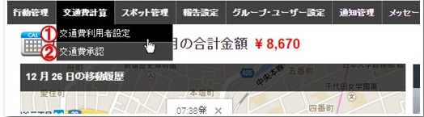

管理者の操作方法¶
ログイン¶
- ログインは こちらのページ からできます。
- ユーザー、グループ管理者の場合は、cyzenのアプリと同じアカウントでログインします。
- システム管理者の場合は、契約時にお伝えしたアカウントでログインします。

メイン画面¶
下記のメニューから機能を選択できます。

- 交通費を利用するユーザーを設定できます。(システム管理者のみ)
- 交通費を確定したユーザーへの承認作業ができます。
ユーザーの利用設定をする¶
システム管理者のみ、設定ができます。
- メニューから交通費利用者設定に移動します。
- 利用させたいユーザーを追加します。

- 交通費自動計算の契約ユーザー数と、利用中ユーザー数が表示されます。
- グループやユーザーを指定して表示を絞り込むことができます。
- チェックを入れたユーザーを追加、あるいは解除することができます。
- 追加、または解除したいユーザーにチェックを入れます。
ユーザーの交通費申請を承認する¶
- メニューから「交通費承認一覧」に移動します。
- ユーザー別、1日ごとの「承認する」ボタンが表示されているので、問題がなければこの画面で承認をすることができます。
- ユーザーが交通費を確定させていないときに「未確定です」と表示され、確定させているときには表示が出なくなります。
- 表示させる日付を選択します。
- 先月、先週、今日などのメニューと過去XX日、 XX日～ XX日のように指定する方法があります。
- グループ名・ユーザー名、確定や承認の状況を選択して「検索」を押して絞り込みます。
- 検索ボタンを押したあとの画面で「保存」を押すと、現在の検索条件を右のボックスに保存します。
- このとき「初期検索条件に設定」にチェックを入れると、保存された検索条件のボックス内のボタンに緑の枠線が付きます。
- 次回この画面を開くと、枠線がついた条件の検索結果が表示されます。
- 保存された検索条件ボタンを押すと、そのボタンが青色になり「この検索条件の結果を表示中」を表します。
- 行をクリックで交通費詳細を確認する画面に移動します。
- 一番上のチェックボックスをチェックすると全選択、それぞれの行をチェックで複数選択ができ、チェックを入れた行を一括で承認します。
- 各行ごとの「承認する」ボタンで承認します。グレーの「承認済み」ボタンを押すと、承認を解除します。
交通費の利用エリアがある程度決まっている場合は、以下のような手順で承認することをお勧めします。
内容を細かく見る場合は、次章の内容をご確認ください。
ユーザーの申請内容を確認する¶
- 表示させる日付を指定できます。カレンダーの色の意味は こちら となります。
- 前の日、次の日に移動します。
- 経路、交通費の表示欄をクリックすると、左側が地図表示になります。
- カレンダーを表示させます。
- 地図に移動経路が表示されます。
- 前の、または次の移動の内容を表示します。
- 経路表示では、点線内をクリックで他の経路候補が表示されます。
- 1日の交通費明細が表示されます。
- 1日の交通費表示を確認したら「承認する」を押します。
- 交通費承認一覧に戻ります。
- カレンダー内の色は以下の状態を表しています。
| 色 | 状態 |
|---|---|
| 白 | 移動なし |
| グレー | 移動あり、交通費未確定 |
| 緑 | 移動あり、交通費確定済み |